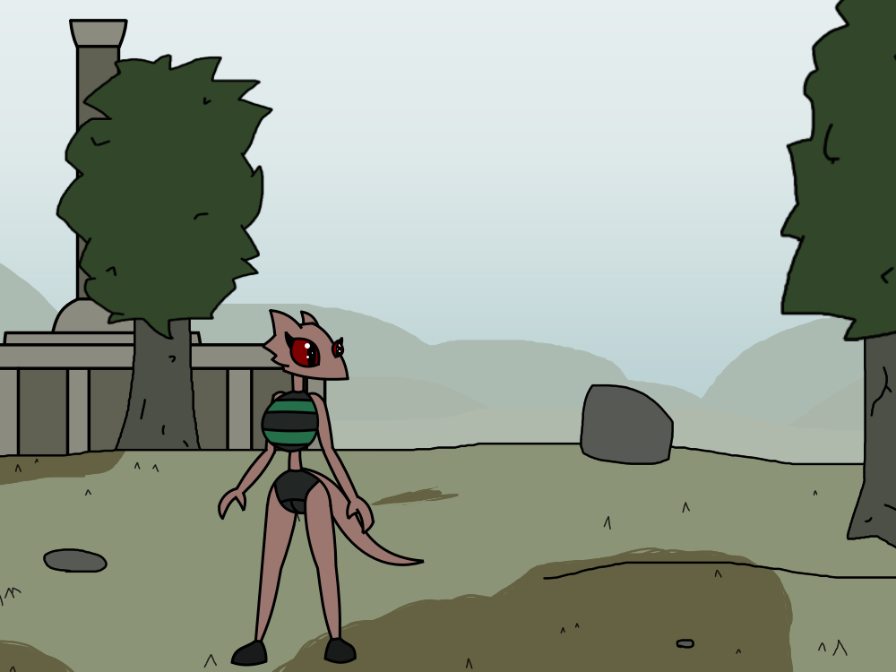

Over by the wilderness outside your home. You're out from your town to think and plan on how to get money to afford staying in Aleswell.
Anon Said
Walk around town, see job offerings
The nearest town is your home Aleswell. You went out to the wilderness to have peace and figure out what to do in this situation.
Aleswell doesn't have a lot of career choices either. Just the clothing store, book store and the whore house. The Motel got shut down a year ago.
Anon Said
Walk deeper into the woods. Try to find a place to sit and relax
Sounds like a good idea. At first. But the forest is filled with hostile animals and perhaps the home for abominations. Although you hate your life you really don't want to get yourself killed or even raped by something out there.
You actually want to better your life. You gave it another chance and you don't want to waste it. So maybe you should consider one of the jobs back home?
Anon Said
How about the book store? It doesn't seem like it'll be hard to get used to. Shouldn't be too difficult to get a job there
That's a fully good idea. You haven't got to get a job at the book store since there was no room for another employee. Currently there's just the owner of the store (The other 2 went adventuring and died) so maybe he has a place for you?
Now when you think about the other choices you figured that they're bad ideas for a couple of reasons.
Anon Said
It'll be best to make your way back to Aleswell before it gets dark to avoid any lingering abominations or creatures. Maybe the book store hasn't closed yet
You went out to think at 11AM but thanks for showing concerns. Maybe something might come after you anyway?
You're back home at Aleswell on the way to the library. Hopefully you can get enough money to pay the bill and force that perverted clothes salesman to give you better clothes.
You hope the pay is high enough for you. Remember to make a great first impression.
Anon Said
Go inside, observe the surroundings
That's odd... The book store never looked this clean before.. Then you remembered that the old store owner DID go on adventure with his employees and died with them. You wonder who the new owner is...
Anon Said
You go to the front desk
It's Groomo Balas! He's the nicest Orc you've met since you moved to Aleswell.
Groomo "Oh hey Pipy! How's your mother?"
Pipy "She died 2 years ago."
Groomo "Oh. Sorry for asking that. What can I help you with?"
Anon Said
go and see what the store has to offer
You would want to know if Groomo has a job to offer rather than asking what's in the store. You're here for a job after all.
Pipy "Do you have a job for me in the store?"
Groomo "You still don't have a job? I would offer a place for you but I'm soon forced to close the store I'm afraid."
Anon Said
might as well ask for a way to help out or for any other options they may know about?
You're unsure if you want to help Groomo save the store. Groomo is nice but you have to save your own skin.

But then again if you don't do anything helpful for him at all you might be seen as useless to other work places. So maybe you should convince him to let you work whilst the store is open?
Anon Said
try your best to convince him perhaps telling them you'll do anything under his terms for whatever long the store is still open
Pipy "I'm in need of some payment so I can stay in Aleswell so if I'm allowed to work here I can do you a huge favor."
Groomo "Well.. Since the store is closing tomorrow I can give you half of the store's money that was left if you help keep the place clean. But the payment isn't gonna be high since the previous owner, Bamelton, took most of it in an adventure and died."
Groomo "I would give you more but I'm also in need."
yellowpearl64 Said
she will say thanks
yellowpearl64 Said
and then she asking why Pipy needs money is because she's needs a better clothes such as sexy armor and weapons such as sword and mace
Pipy "Thank you very much sir! I promise I will not let you down."
Groomo "I'm sure you won't in such a low period of time dear. No problem."
Looks like it's going up for you now.